1.for 문 (for statement) 에 대해 이해한다
2.while 문과 do - while 문에 대해 이해한다
반복문을 알지 못한다면 어떨까요??? 반복적인 일들을 연속적으로 타이핑을 해야하는 불편한 일들이 생길겁니다. 만약 반복문을 모르는 상태에서 1부터 100까지 더하는 소르를 작성하라고 하면 어떻게 작성을 할까요?
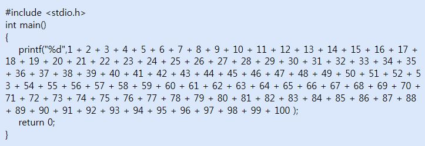
아마 우리는 모두 이렇게 작성을 하게 될 겁니다. 그런데 1부터 10000까지의 합을 작성하라고 하면 어떨까요?? 우리는 눈 앞이 캄캄해질 겁니다. 적어도, 이 강좌를 보기 전 까지는 말이죠.
for 문 (for statement)
예를 들어서, 1 부터 100 까지 곱한다고 칩시다. 인간은 지능이 있으므로 충분한 시간만 주어진다면 이를 수행할 수 있습니다. 단, 엄청난 짜증을 내겠지요. 그리고 '도대체 이런 계산을 내가 왜 하나?' 라는 생각도 들어 계산을 하다 말고 도망 갈 수 도 있습니다. 하지만 컴퓨터의 경우 그렇지 않습니다. 우리가 어떤 생-노가다 성 일을 시켜도 묵묵히 자기 일만합니다. 아무리 지겨운 연산이라도 전기 조금 더 달라는 요구, 조금 쉬게 해달라는 요구도 없이 묵묵히 자기 일 만 할뿐이지요. 따라서, 이번 강좌에서는 반복문에 대해 중점적으로 알아보도록 하겠습니다. 반복문은 컴퓨터 상에서 상당히 많이 쓰이므로 반드시 이해하시기 바랍니다. 일단, C 언어에서 사용할 수 있는 반복문은 여러 종류가 먼저 있습니다만, 가장 먼저 널리 쓰이는 for 문에 대해 알아 보도록 하겠습니다.
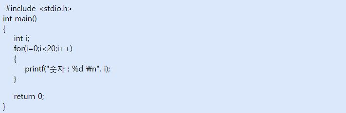
for 문은 다음과 같은 기본 구조를 가지고 있습니다.
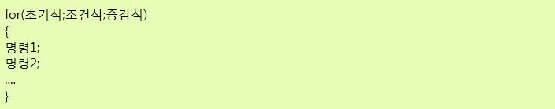
일단, 각 부분의 역할이 무엇인지 알아 보도록 하죠. 초기식에서는 제어변수가 초기화 됩니다. 이 말은 즉, for 문은 반복문이고, 반복문은 얼마나 반복을 해야 될 지 알아야 합니다. 만약 반복문이 끊이지 않고 반복한다면 CPU 사용률을 100%로 끌어 올려 전력 낭비일 뿐 만이 아니라 코드 뒷 부분이 실행되지 않아 여러 오류들이 발생될 수 있습니다.
따라서, C 언어에서는 반복문이 얼마나 반복해야 할 지를 알기 위해 '제어변수' 라는 것을 도입하였습니다. for 문으로 하여금 제어변수가 특정한 조건을 만족할 때 에만 반복을 계속하게 한다는 것입니다. 제어변수의 초기값은 for 문의 '초기식' 부분에서 지정 됩니다. 예를 들어서 내가 i 를 제어변수로 이용하다면 초기식에 i = 4; 가 되면 처음 i 의 값을 4 로 한다는 뜻이지요.
이제, for 문이 조건식을 봅니다. 조건식은 우리의 제어 변수인 i 가 만족해야 될 특정한 조건이 있습니다. 예를들어, i 의 값은 언제나 10 미만이라 던지 (i<10), i 는 언제나 1 이상 이라던지 (i >= 1). for 문은 이러한 조건식이 참 일때에만 그 일을 수행합니다. 여기서 '그 일' 은 중괄호 속의 명령들을 실행한다는 뜻이지요.
마지막으로 증감식은 "1 회 실행 시 i 의 값을 어떻게 만들어야 되냐? " 가 나타나 있습니다. 예를 들어서 증감식에 i+ 가 써 있다면 한 번 실행 할 때 마다, i 의 값을 1 증가 시킵니다. 마찬가지로 증감식 부분에 i-=2 라면 한 번 실행 할 때 마다 2 씩 감소하겠네요. 매번 실행 할 때 마다, for 문의 증감식이 실행 되고, 그다음에 조건식을 체크 합니다. 만약에 조건식이 i < 10 이였고, i 의 값은 9 였다고 칩시다. 또한 증감식이 i ++ 이였다면, 명령들을 실행 한 후, 증감식이 실행되어 i 의 값은 10 이 됩니다. 따라서, 조건식이 거짓이 되어 for 문을 빠져 나갑니다.
그렇다면 위의 소스 코드는 어떨까요?
우리가 컴퓨터라면, 일단 컴퓨터는 for 문을 보고,
"음, i 의 값을 0 으로 해야 겠다. (초기식) for 문에 i < 20 으로 되어 있으므로 (조건식)
"i < 20 이 맞나? 맞네.. 그럼 중괄호 속의 내용을 실행해야지."
"숫자 0 출력"
또한, for 문에 i++ 로 되어 있으므로 (증감식)
"이제 i 의 값을 1 증가 시켜야 겠다. "
따라서, i 의 값은 1 이 된다.
"i 의 값이 20 미만 인가? 어, 맞네. 그러면 한 번 더 실행 해야 겠다. " "숫자 1 출력" ...... (생략) ...... "이제 i 의 값을 1 증가 시켜야 겠다" (증감식)
20 번의 실행 후, i 의 값이 마침내 20 이 되었다.
"i 의 값이 20 미만 인가? 어? 아니잖아. (조건식) 그러면 이제 for 문을 빠져 나가야지"
하며, 더 이상 중괄호 속의 내용을 실행하지 않는다. 즉, "숫자 20" 출력은 되지 않는다. 와우! for 문은 의외로 간단합니다. 단지 알아야 하실 것은 for 문은 "특정한 연산을 제어변수가 조건에 맞을 때 만 반복해 주는 것이다." 라고 이해하시면 되겠습니다.
두 번째 예로는?
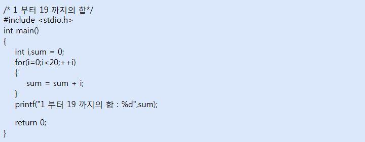
독자 여러분들의 컴퓨터가 비정상이 아니라면, 아니면 당신의 눈이 잘못되지 않는 한 위 결과는 190 으로 나올 것입니다. 일단, 위 프로그램의 핵심부분은 아래와 같습니다.
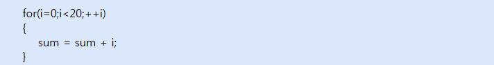
for 문을 살펴보자면, 위 for 문은 총 20 회 실행되며 i 는 0 부터 19 까지의 값을 가집니다. 이 때 주목해야 할 부분은 바로
이 부분이죠. sum 이라는 변수에 i 의 값이 계속 더해집니다. 아시다 싶이 여러분은 sum = sum + i 라는 식의 뜻이 0 = i 라는 괴상한 방정식이 아니라 '=' 를 '대입 연산자' 로 생각하여 'sum 이란 변수에 sum + i 의 값을 집어 넣는다' 라는 의미가 됩니다. 즉, 위 상태로 for 문을 실행하게 되면 sum 에 0 부터 19 까지의 값이 더해지게 됩니다.
위 for 문을 보통 수식으로 풀어쓰면 아래와 같이 됩니다.
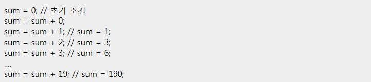
이 되는 것이지요. 그렇다면 이제 1 부터 10000 까지의 합은 어떻게 구할까요? 그야 간단합니다. 단지 조건식만 약간 수정해 주면 됩니다. 한가지 걱정할 부분은 만약 10000 까지의 합이 int 자료형의 범위보다 크면 안되는데, 다행히도 크지 않으므로 그냥 계산 하시면 됩니다. 이는 아래와 같습니다.
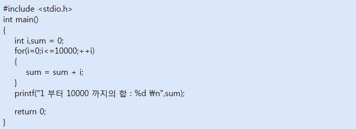
그 결과는
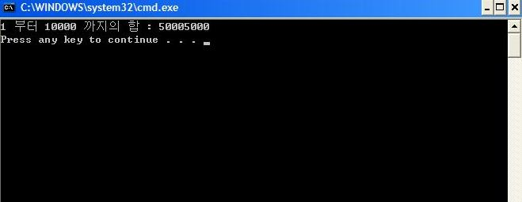
어때요? 간단하지요?
아마 이 쯤 하셨다면 for 문에 대해 어느 정도 아셨을거 같으니 for 문과 비스무리하면서도 다른 반복문인 while 문에 대해 살펴 보도록 해봅시다.
While문
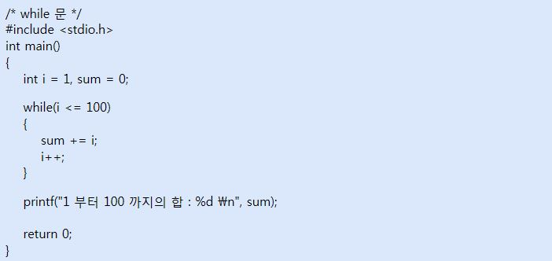
성공적으로 컴파일 하였다면
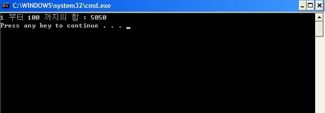
와 같이 1 부터 100 까지 숫자들의 합이 출력됩니다.
while 문은 위의 예제에서도 알 수 있듯이 for 문과는 달리 구조가 사뭇 단순합니다. while 문의 기본 구조는 아래와 같습니다.
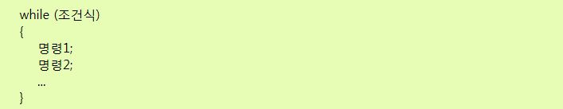
for 문 처럼 '조건식' 에는 이 while 문을 계속 돌게 할 조건이 들어갑니다. 예를 들어서 조건식에 i <= 100 이 들어간다면 i 가 100 이하 일 때 만 조건이 성립하므로 i 가 100 이하일 때 까지 while 문이 계속 돌아가게 됩니다.
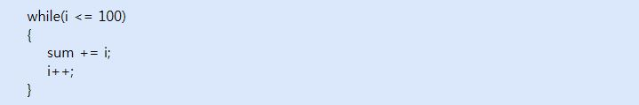
위 경우, i 의 값이 100 이하 인 지 검사한 다음에 (i <= 100 ), sum 에 i 를 더하고 (sum += i ), i 의 값을 증가한 뒤 (i++ ), 다시 처음으로 돌아가게 됩니다. 이 때, while 문의 특징이 바로 시작부터 조건식을 검사한다는 것입니다. (이는 for 문과 동일합니다.) 따라서, 만약 i < 1 이 조건식이라면 while 문 내부의 내용은 하나도 실행되지 않고 종료되게 됩니다.
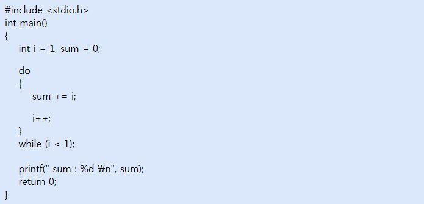
성공적으로 컴파일 하였다면
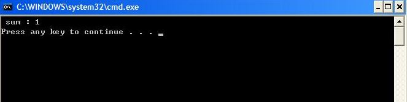
와 같이 나오게 됩니다. do - while 문의 구조는 아래와 같습니다.
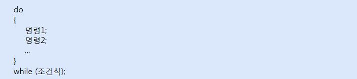
do-while문
do - while 문은 사실 whlie 문과 같습니다. 그런데, 한 가지 차이게 있는데, 앞서 말했듯이 while 문은 명령을 실행하기 전에 조건식이 참 인지 먼저 검사 합니다. 따라서, 조건식이 처음부터 참이 아니라면 whlie 문 안의 내용은 결코 실행 될 수 없겠지요. 그런데, do - while 은 먼저 명령을 실행 한 뒤에 조건식을 검사합니다. 따라서, 처음부터 조건식이 참이 아니라도 명령을 먼저 실행한 다음 조건식을 검사하기 때문에 최소한 한 번은 실행되게 됩니다.
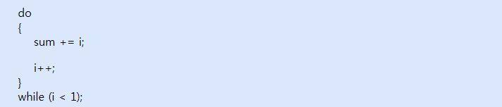
따라서, 위 경우 i 가 1 로 i < 1 이 였지만 조건식을 나중에 검사하기 때문에 일단 sum + = i ; 와 i ++ 을 실행 한 다음에 i < 1 이 검사되어 sum 의 값이 1 이 출력될 수 있었던 것이지요. 어때요, 정말 쉽죠?
처음으로